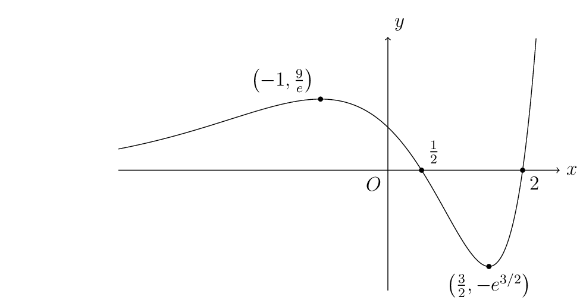
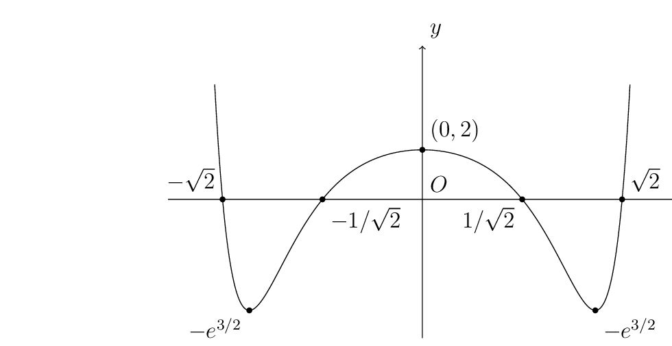

(i)
\[
y=e^x(2x^2-5x+2)=e^x(2x-1)(x-2)
\]
\[
\frac{dy}{dx}=e^x(2x-3)(x+1)
\]
\[
\frac{dy}{dx}=0\implies x=-1,\ \frac32
\]
| \(x\) | \(-\infty\) | \(-1\) | \(\frac12\) | \(\frac32\) | \(2\) | \(\infty\) |
| \(y\) | \(0^{+}\) | \(\frac9e\) | \(0\) | \(-e^{\frac32}\) | \(0\) | \(\infty\) |

| \(k\) | \(k<-e^{\frac32}\) | \(k=-e^{\frac32}\) | \(-e^{\frac32}<k\leq0\) | \(0<k<\frac9e\) | \(k=\frac9e\) | \(k>\frac9e\) |
| \(\#\text{ roots}\) | \(0\) | \(1\) | \(2\) | \(3\) | \(2\) | \(1\) |
(ii)
\[
f(x)=e^{x^2}(2x^4-5x^2+2)=e^{x^2}(2x^2-1)(x^2-2)
\]
\[
f(x)=f(-x)
\]
\[
\begin{aligned}
\frac{dy}{dx}
&=2xe^{x^2}(2x^4-5x^2+2)+e^{x^2}(8x^3-10x)\\
&=2xe^{x^2}(2x^2-3)(x^2+1)
\end{aligned}
\]
\[
\frac{dy}{dx}=0\implies x=0,\ \pm\sqrt{\frac32}
\]
| \(x\) | \(0\) | \(\frac1{\sqrt2}\) | \(\sqrt{\frac32}\) | \(\sqrt2\) | \(\infty\) |
| \(y\) | \(2\) | \(0\) | \(-e^{\frac32}\) | \(0\) | \(\infty\) |
